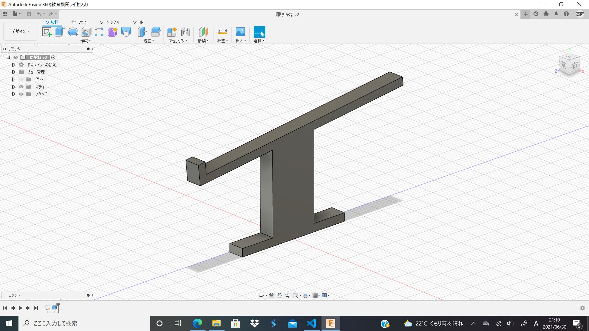
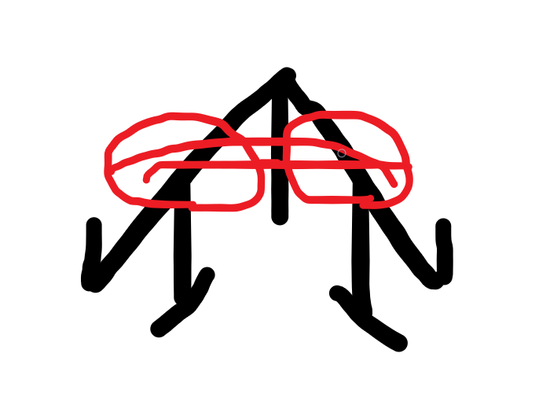
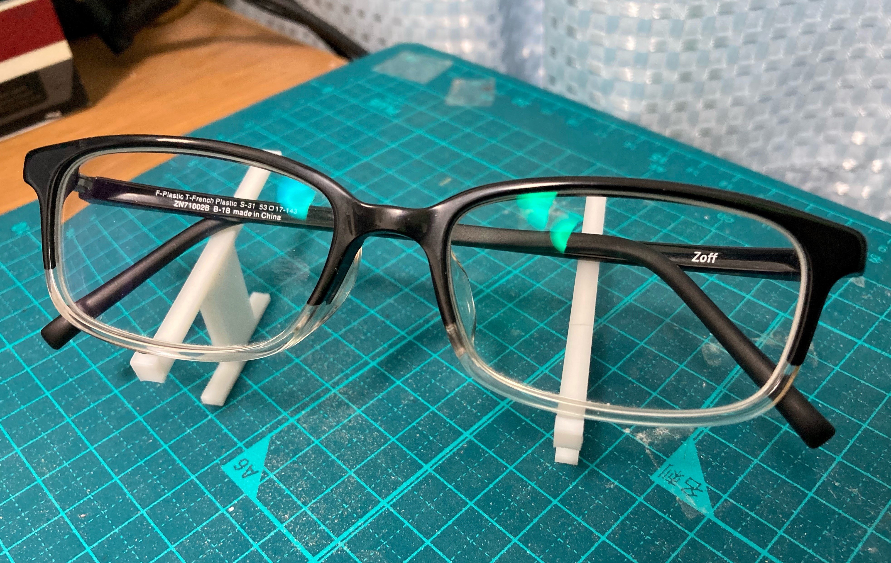
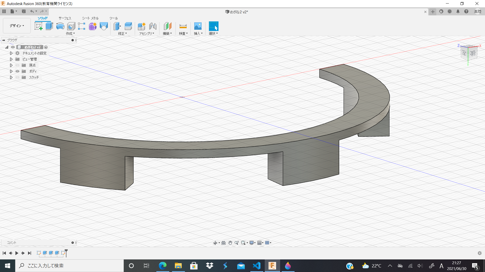

これまでのDOP
6/11のミーティングで作るものが眼鏡置きに決まった。なので眼鏡置きを中心に製作を進めていくのであった。
1

眼鏡置きを作ると決まったが正直あまりアイデアが浮かばなかった。自分は眼鏡ユーザーではあるが、家で使うときに眼鏡置き(もっと言えば眼鏡ケースも)を使用したことがないからだ。ミーテイングでの会話から"水場で使って濡れないモノ"や、"眼鏡の置き場が毎回バラバラなので統一出来るモノ"などヒントがあったのでそれをもとに製作した。

置き場だというのだからモノを置く面は少し上にあげたいと思い、まずこんなものを思いついたが明らかにサポートが張り巡らされる未来しか見れなかったので没案となった。結局製作したのが冒頭の画像。
没案となったモノの機能はのこしつつもサポートを付けないことを重視してデザインしのがアレ。使用方法としては2つ以上からユニットを組み、眼鏡を置く。使用した感想としては「使えなくはないけど使えない」。前提として安定感がない。もうちょっと下ぶくれ的にしたら安定感はまずかもしれないがサポートの問題がある。
先生からも「１つで機能しないものはダメ」と言われたのでこれも没案だろう。次は１つでモノを置けるモノを製作する。

2

上記の反省を生かし1発で印刷できる形を考えた末、"2次元のものに足付けたら行けるのでは？"という安直な考えが思い浮かびこれになった。必要な接点だけを残したUの字に足をつけたただそれだけのものだ。
しかし、これが意外と安定感があり機能としては悪くないものになった。ただデザイン的にいいとは言えず、総合的にいまいちなモノとなった。
今後の展望
眼鏡置きのアイデア出しが停滞してきているので今週は新しいモノも同時進行で製作することになった。今のところペン立て的なものを製作しようと思っているがどうだろうか？